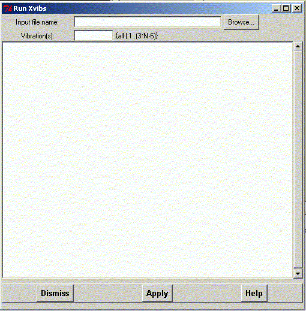

**************************************************************************
Run Xvibs program widget
Leif Laaksonen CSC 1997
**************************************************************************
Run the Xvibs program by Bradley A. Smith (yeldar@home.com) to produce animations from Aces2, Gamess, PC Gamess, Gaussian 92/94/98, or ADF output files.
The home page to the xvibs program is at: http://members.home.net/yeldar/xvibs/.
Give the name of the input file and specify what vibrations you want to be converted to XMOL files.
When you are ready click the "Apply" button.

Line command: see run command
**************************************************************************
LUL/1997
**************************************************************************